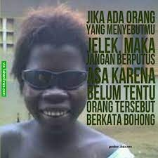

Masi insecurer?
Lihatlah orang-orang ini!


Apakah kamu semua pernah merasakan yang namanya insecure dalam menjalani sebuah kehidupan, baik kamu yang sekarang masih duduk di bangku sekolah ataupun kamu yang sudah lulus bahkan sampai kamu yang sudah memiliki pekerjaan. Pasti setiap orang memiliki rasa insecure didalam dirinya masing-masing, entah itu insecure akan kegagalan, cemas akan kehidupan di masa depan, dan lainnya.
Akibat lain yang akan ditimbulkan dari rasa insecure tersebut adalah seseorang bisa menjadi takut untuk berinteraksi dengan orang lain. Hal ini bisa disebabkan mungkin karena berat badannya, warna kulit yang berbeda, dan perbedaan fisik lainnya ataupun segala perbedaan yang menyebabkan seseoarang merasa insecure sehingga timbul rasa tidak aman untuk berinteraksi.
Insecure atau insecurity menurut Asta (2019) artinya adalah tindakan dari adanya emosi apabila kita menilai diri kita menjadi seorang inferior dari orang lain. Pendapat pribadiku sendiri menyatakan bahwa insecure dapat diartikan sebagai perasaan tidak aman yang mungkin setiap orang rasakan dalam hidupnya.
nonton videonya satu-satu supaya nda boleh insecure orang
Lihatlah orang-orang ini!
Jadii too pesanku jamii ko terlalu insecure okeee masa hnya karna ko insecure karna ko pen cantik.
klik ko lanjutt